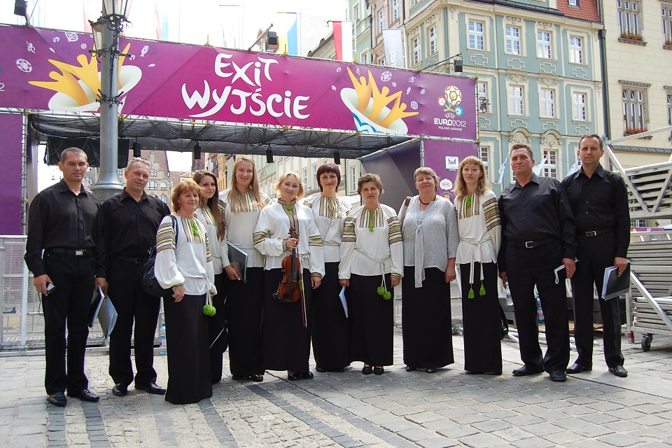
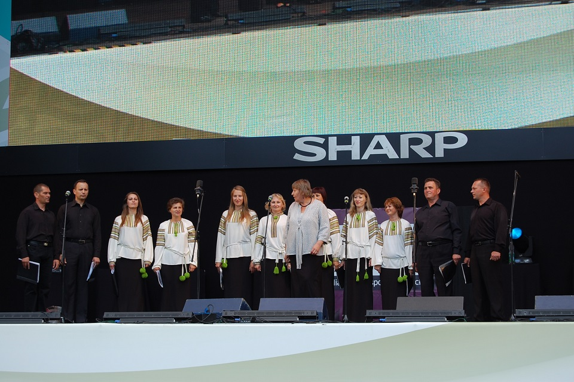
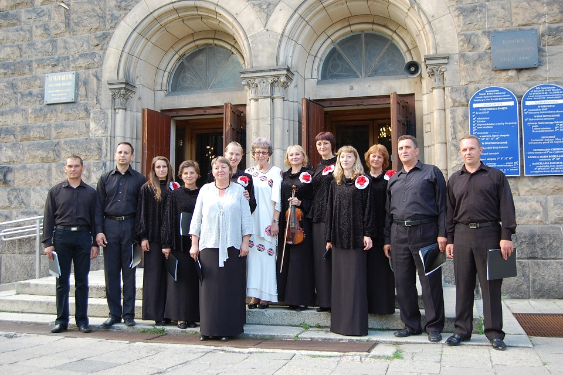
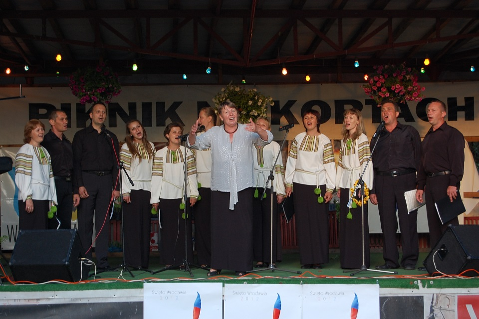
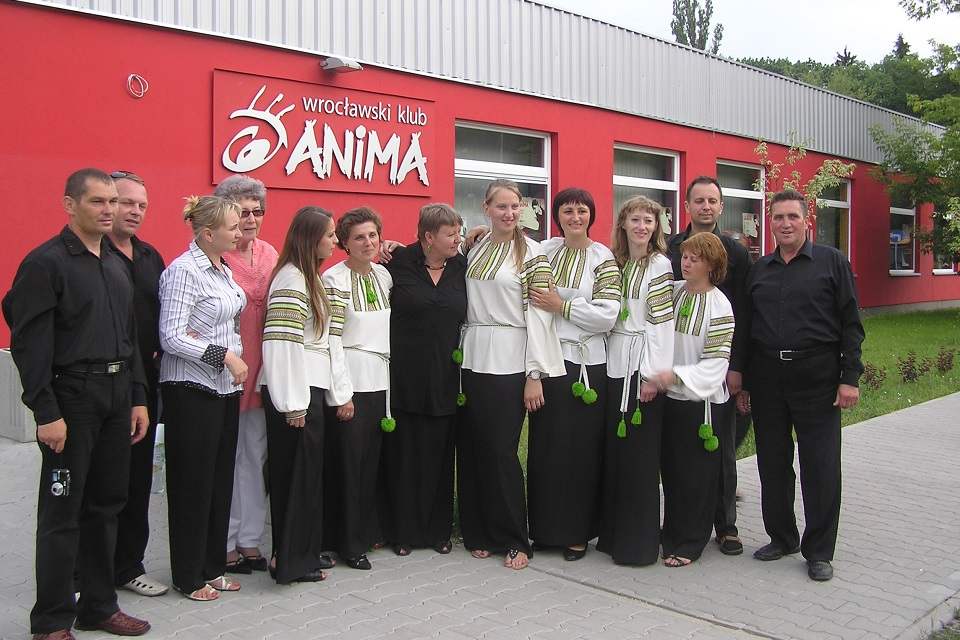
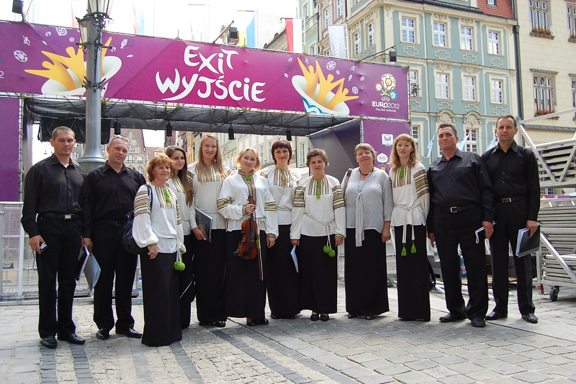
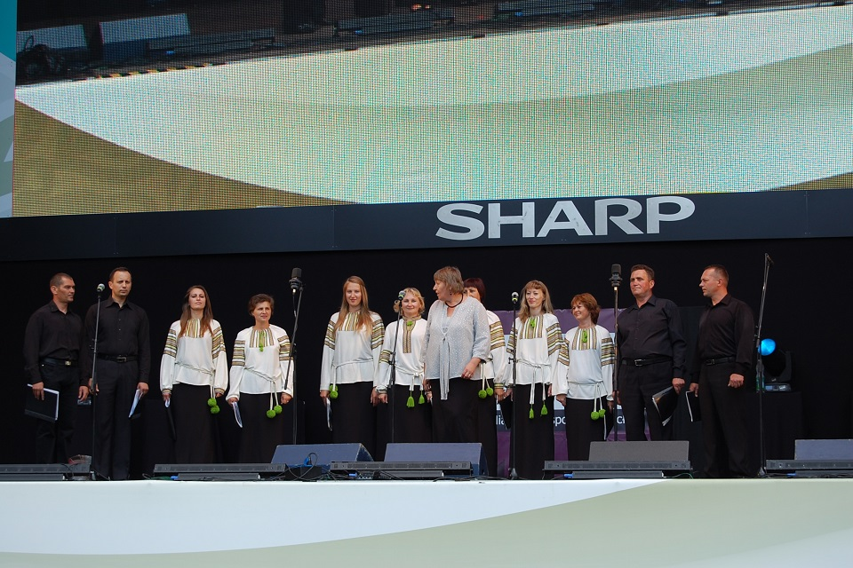
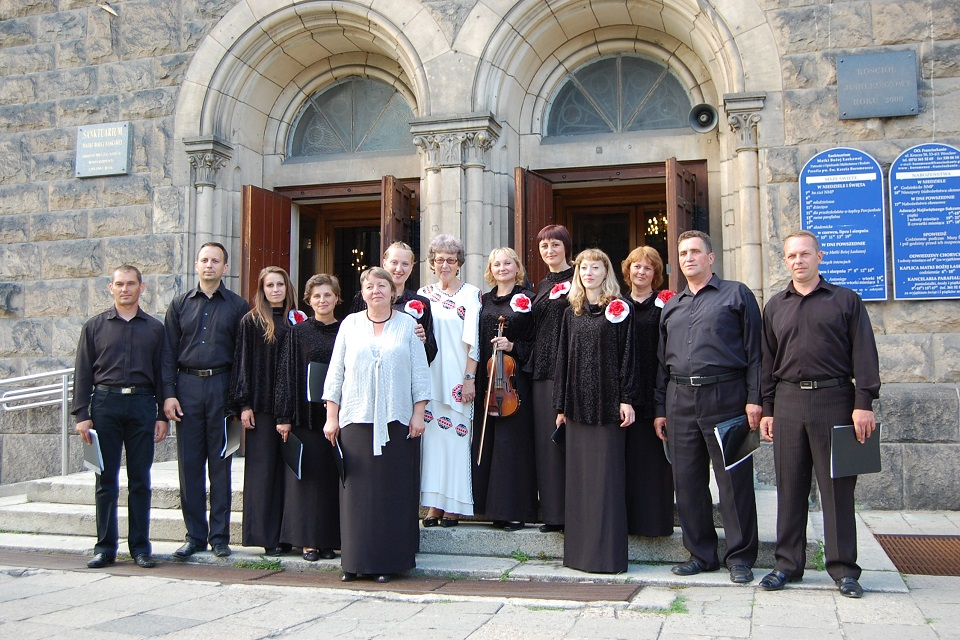
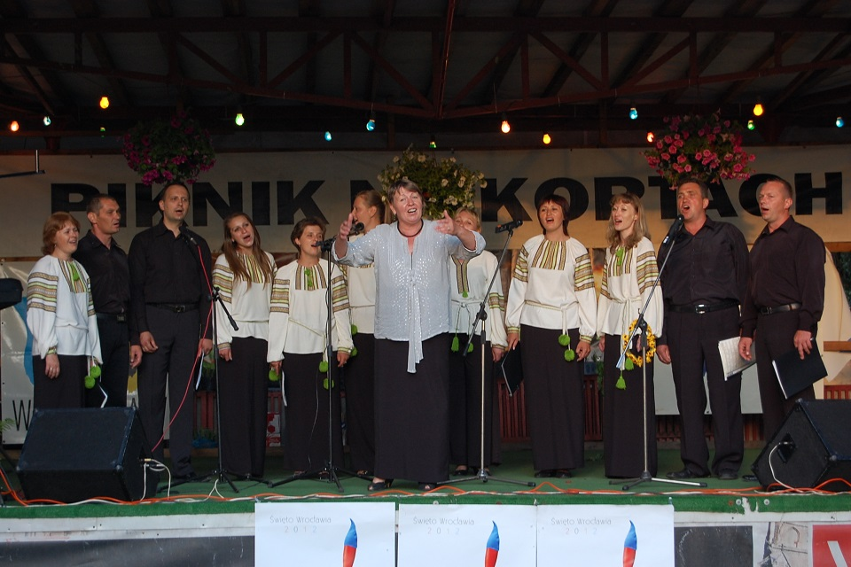
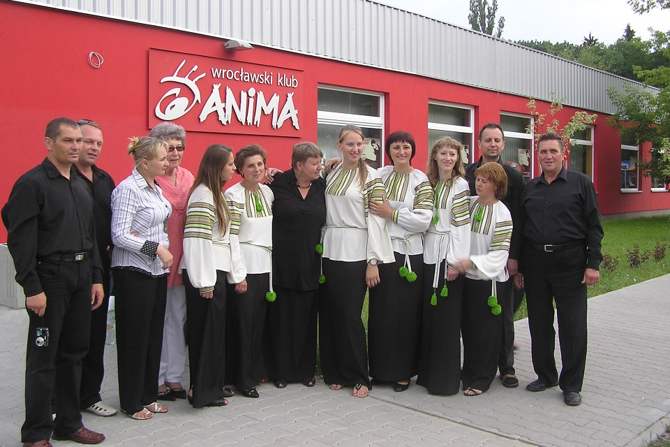

Chór kameralny „Cantica Anima”
 Działający przy Domu Polskim w Barze chór kameralny „Cantica Anima”ma na swoim koncie liczne występy w Macierzy i na Ukrainie. W latach 1999 – 2005 był on wykorzystywany jako chór ćwiczebny w czasie kursów dla dyrygentów chórów polonijnych z Ukrainy.
Działający przy Domu Polskim w Barze chór kameralny „Cantica Anima”ma na swoim koncie liczne występy w Macierzy i na Ukrainie. W latach 1999 – 2005 był on wykorzystywany jako chór ćwiczebny w czasie kursów dla dyrygentów chórów polonijnych z Ukrainy.
Od 2008 roku do chwili obecnej dyrygentem chóru jest, zasłużona dla kultury polskiej, pani Ludmiła Chałabuda.
Warsztaty chóralne cieszyły się dużym powodzeniem. Z najdalszych zakątków Ukrainy rokrocznie przybywali zainteresowani, którzy wracali w swoje strony bogatsi o zdobytą wiedzę, którą mogli następnie wykorzystać w pracy ze swoimi chórami.
We wrześniu br. Już w Domu Polskim zostały wznowione kursy dyrygenckie.
„Piękna muzyka jest uniwersalnym językiem, który, mówi
- Pius XII
bezpośrednio z serca do serca, poza murami i poza granicami narodów„
Ze swoimi występami artystycznymi chór wystąpił wielokrotnie w polskich miastach:
w Koszalinie w latach 1999, 2000, 2015
we Wrocławiu w latach 2012,2013
w Starachowicach w 2012roku
Chór miał również zaszczyt występować w Ambasadzie RP w Kijowie w roku 2008 roku.
Galeria
 








